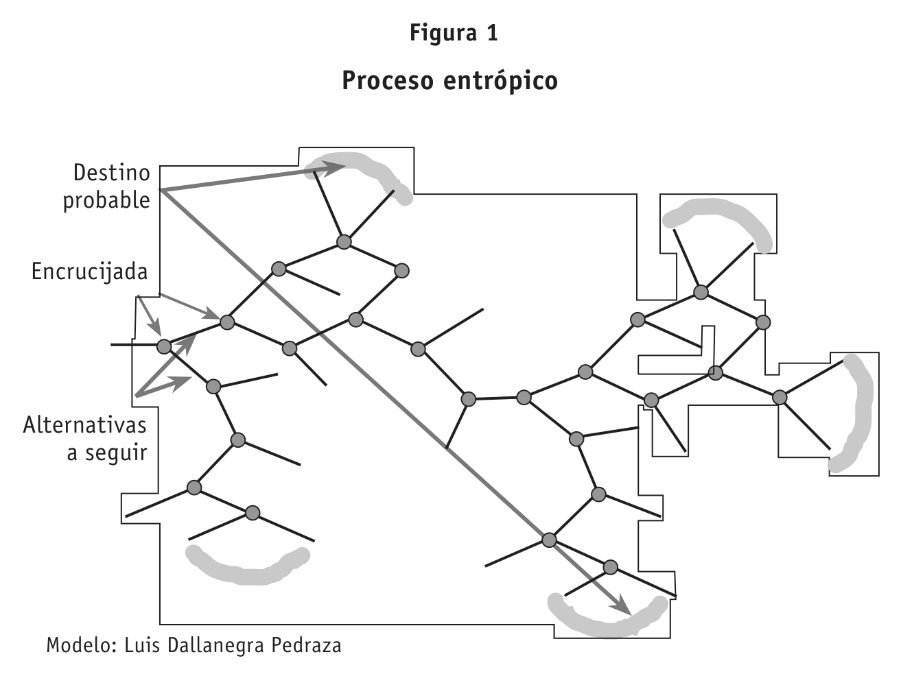
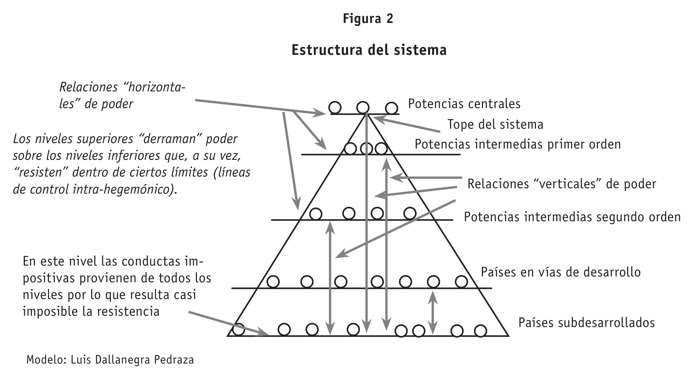
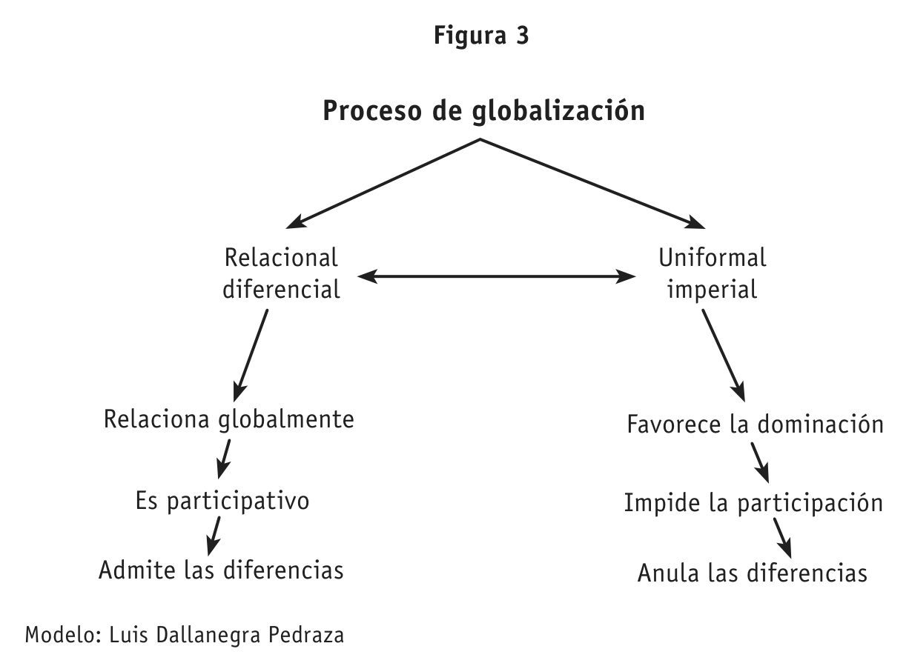
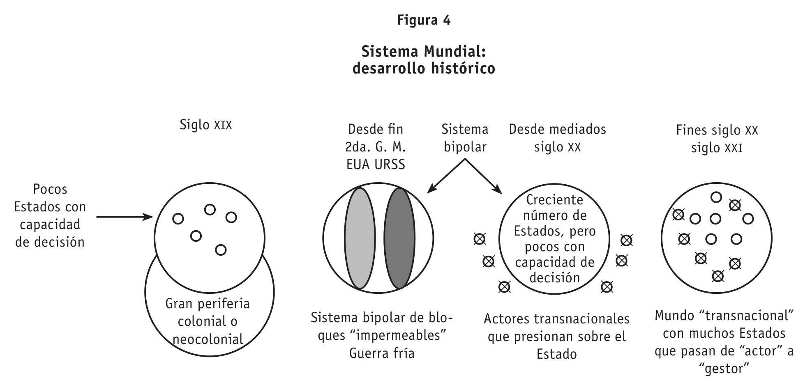
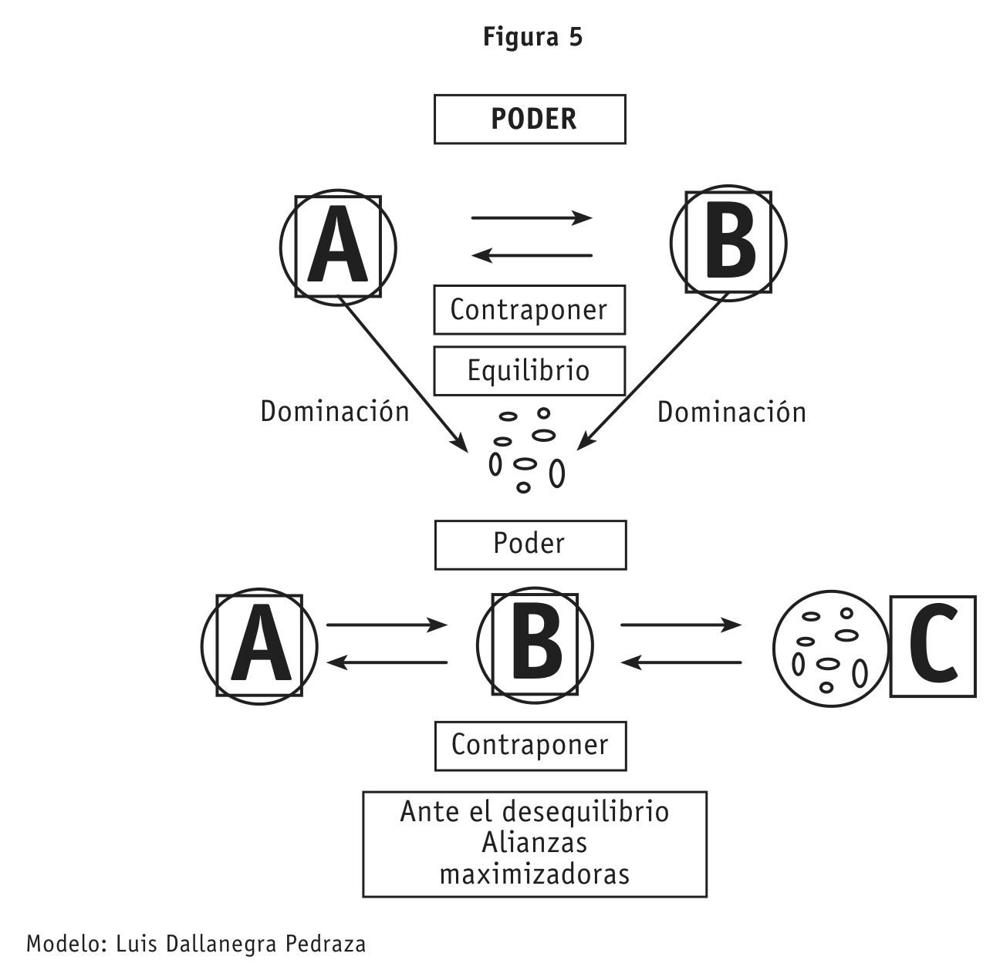
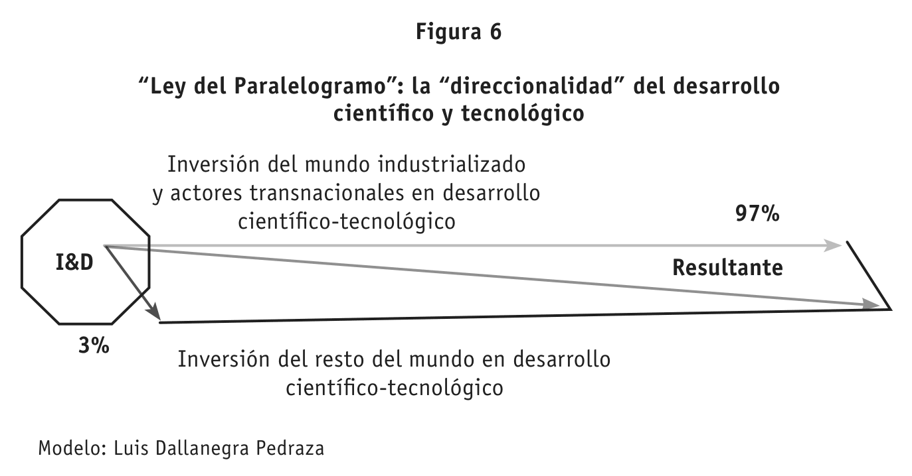

Geopolítica Internacional · Grupo 1541 · Lectura 14
Geopolítica de la construcción de poder
Luis Dallanegra Pedraza (2010). «Teoría y metodología de la geopolítica. Hacia una geopolítica de la “construcción de poder”». Revista Mexicana de Ciencias Políticas y Sociales, 52(210), 15–42.
Jueves 26 de noviembre de 2026A-101 · 09:00–11:00FCA · UNAM
Tu control · punto 1
Lee en voz alta la frase que copiaste, con su página.
¿Por qué la elegiste? Mientras avanzamos, fíjate en qué parte del artículo cae tu cita: el sistema, los clásicos, la fragmentación, los tipos de integración o la construcción de poder.
El artículo en seis paradas
De la teoría del sistema a una salida para la periferia
La paradoja de la que parte todo
«La incapacidad de América Latina no pasa por la falta de recursos, sino por la ausencia de proyectos».Dallanegra Pedraza, 2010, p. 39
En materia geográfica, dice el autor, es «la región más rica del planeta» (p. 39). Y aun así pesa poco en las decisiones del mundo.
Para mirar · 12 min
Mientras lo ves, anota
Tres recursos de la región que el mundo necesita.
Quién decide sobre cada uno: ¿un gobierno latinoamericano, una empresa trasnacional u otra potencia?
I
El sistema y el poder
Cómo mira el mundo Dallanegra antes de hablar de América Latina.
pp. 15–22
Variables significativas · p. 16
Lo que mide cualquier geopolítica…
dominaciónpoderinfluenciaindependenciasoberaníainterdependenciaintegridad territorialestabilidad política y socialdesarrolloprestigioseguridad
…y lo que agrega la periferia
«El para qué del poder», que conlleva:
resistenciaconstrucción de poderautonomíareclamos de justicia

Entrópico y heurístico · p. 17
«El objetivo concreto rige el camino concreto».p. 17
Entrópico: los caminos que se escogen, o se imponen, para ir en una dirección.
Heurístico: «la forma en que se elige de la manera más adecuada evitando, a su vez, imposiciones».

«Los niveles superiores “derraman” poder sobre los niveles inferiores que, a su vez, “resisten” dentro de ciertos límites».Figura 2, p. 18
En la base, «las conductas impositivas provienen de todos los niveles», y resistir es casi imposible.
Pregunta: ¿en qué piso pones a México? ¿A Brasil? ¿A China?

Para subrayar · p. 19
«Ya no son las ideologías sino la tecnología la que crea una nueva y profunda división del mundo en bloques o conglomerados geoeconómicos».p. 19
Del glosario del grupo · Fragmentación económica
«La división progresiva de la economía mundial en redes, bloques o sistemas menos conectados».
Farrell y Newman (2025)
«Dentro de este marco, la región opera como una periferia subordinada en vez de ser un actor dentro del sistema».p. 20
La cibernética como instrumento de expansión y dominación · pp. 21–22
«Hoy, las armas letales no son nucleares sino virtuales». «En la mayoría de los países, la infraestructura crítica (redes de distribución de agua y electricidad, transportes y telecomunicaciones) está conectada a internet y carece de las funciones de seguridad adecuadas. Ese déficit las coloca en situación de extrema vulnerabilidad».p. 22
Sobre la red Echelon, el autor cita un informe del Parlamento Europeo: para Washington, México sería «un libro abierto» (p. 21).
Del foro · la p. 22 en 2026
Ciberataque a bancos de sangre en Francia
El gobierno francés confirmó una ola de ciberataques contra bancos de sangre e instituciones médicas críticas.
Francia y los hackeos
Un ciberataque masivo de sabotaje alteró el control de temperatura de infraestructura crítica.
Del glosario del grupo · Vulnerabilidad estratégica
«Una debilidad que aparece cuando un país depende de otro actor para acceder a recursos, infraestructura, tecnología o procesos esenciales». «Una vulnerabilidad económica puede convertirse en una fuente de poder para otro Estado».
Farrell y Newman (2025)¿Quién controla las redes de las que depende México? ¿Y desde dónde?
II
De Ratzel a Quagliotti de Bellis
Los cuadros del autor: la geopolítica clásica, la de la Guerra Fría y la que se pensó desde Sudamérica.
pp. 22–28
Geopolítica clásica · cuadro de la p. 22
| Autor | Definición |
|---|---|
| Friedrich RatzelAlemania, 1860 | El Estado es un organismo vivo: espacio vital. |
| Alfred T. MahanEUA, 1890 | Dominar los mares para dominar el comercio y el mundo. |
| Halford MackinderInglaterra, 1904 | La «Isla Mundial»; Heartland y Hinterland; equilibrio de poderes. |
| Rudolf Kjellén1916 | Crea el vocablo «geopolítica»; el Estado como organismo geográfico «viviente». |
| Karl HaushoferAlemania, 1928 | Lucha de vida o muerte por el espacio vital; reparto del mundo en áreas de influencia. |
«Las definiciones […] presentan el concepto de dominio como central, y al de Estado-nación como actor principal» (p. 22).
Del glosario · Heartland
Para Mackinder, el «área pivote» del mundo: quien la controla tiene las mejores condiciones para la hegemonía global.
Del glosario · Rimland
Spykman: las costas de Eurasia que rodean al Heartland. El autor lo cita en la p. 22.
Geopolítica de la Guerra Fría · cuadro de la p. 23
Henry Kissinger · EUA, 1973
«Un mundo restaurado»
«La bipolaridad es altamente peligrosa, aunque el máximo peligro consistiría en la unipolaridad». «Multipolarismo sí, pero bajo el control de Estados Unidos».
Zbigniew Brzezinski · EUA, 1979
«La era tecnotrónica»
«Las invenciones tecnológicas provocan cambios culturales y éstos, cambios en la estructura social. La élite que controle estos cambios controlará el mundo».
Une esta fila con tu subrayado de la p. 19: la tecnología divide al mundo en bloques. ¿Quién controla hoy esos cambios?
Ojo · una precisión sobre la p. 38
El autor escribe que la Comisión Trilateral,
«a través del Club de Roma, planteó un modelo neoliberal de gobierno mundial».p. 38
No es así
El informe del Club de Roma, Los límites del crecimiento (1972), fue una crítica directa al crecimiento económico ilimitado que defendían el capitalismo y el neoliberalismo.
Ambos foros nacieron en la misma época y con influencia transnacional, pero sus agendas eran opuestas: la Trilateral impulsaba la globalización y el libre mercado; el Club de Roma advertía del colapso ecológico y pedía límites al desarrollo.
Lección para tus controles: también un autor citado se equivoca. Verifica.
El mundo después de 1991 · cuadro de la p. 25
Francis Fukuyama · 1992
El fin de la historia
La lucha de ideologías terminó; el mundo se dirige a la democracia liberal, en lo económico y en lo político, «como única opción viable».
Samuel Huntington · 1996
El choque de civilizaciones
Los conflictos futuros no serán ideológicos ni económicos, «sino más bien culturales».
Dallanegra lee a Huntington como heredero de Kennan: «Del Mister “X” […] se pasó al Mister “H” del post bipolarismo» (p. 19).
Geopolítica en América Latina · cuadro de la p. 27
| Autor | Idea central |
|---|---|
| Mario TravassosBrasil, 1933 | Proyección continental de Brasil: expansión hacia el Pacífico, varias salidas al mar, dominio de la Cuenca del Plata. |
| Jorge AtencioArgentina, 1965 | Influencia de los factores geográficos en la vida de los Estados; guía del estadista y del militar. |
| Augusto Pinochet UgarteChile, 1965 | El Estado como organismo vivo, con una constitución semejante a una «ameba»: «crecerá alimentándose de los vecinos». Mar presencial. El «Estado ameba» (p. 35). |
| Golbery do Couto e SilvaBrasil, 1967 | Compartimentación geopolítica de América del Sur en cinco áreas. |
| Juan E. GuglialmelliArgentina, 1967 | Cono Sur como punto de partida para la unidad latinoamericana; Brasil, gran competidor. |
| Edgardo Mercado JarrínPerú, 1976 | Introduce la «seguridad económica colectiva». |
| Terezinha de CastroBrasil, 1981 | Atlántico Sur como Mare Nostrum lusoamericano; Hispanoamérica «de espaldas al mar». |
| B. Quagliotti de BellisUruguay, 1981 | La integración es la única alternativa: «nos integramos o nos integran». |
Bernardo Quagliotti de Bellis · cuadro de la p. 27
«La integración es la única alternativa: nos integramos o nos integran. Para qué y para quién nos integramos».p. 27
Perón lo dijo así, tomando a Travassos: «el año 2000 nos encontrará unidos o dominados» (nota 17, p. 26).

Geopolítica crítica · p. 26
Foucault: la geopolítica como factor de transformación, «en especial para los que carecían de poder».
Galtung: «Si la alternativa poder contrapoder no funciona para la gran mayoría, hay entonces que generar alianzas ‘maximizadoras’ para sumar poder».p. 26
El enfoque heurístico «parte del principio de que el centro nunca modificará su conducta» (p. 28).
Pregunta al grupo
En la figura 5, ¿quién es C?
Ponle nombres de hoy a A, B y C. ¿Qué alianza conoces en la que varios países débiles suman fuerzas frente a uno más fuerte?
III
Fragmentada desde afuera, autofragmentada desde adentro
pp. 29–31
Fragmentación y autofragmentación · pp. 29–30
«Desde la época de la independencia, ha habido en América Latina un permanente proceso de fragmentación guiado desde afuera».p. 29
Monroe contra Bolívar
La competencia entre la concepción monroísta y la bolivarista «se decidió a favor» de Estados Unidos; se institucionalizó con el TIAR y la OEA (1947-48).
p. 29El Corolario sigue vigente
Se manifiesta en el TLC, el ALCA, el Consenso de Washington y la lucha contra el narcotráfico o el terrorismo.
p. 30Autofragmentación
«Chile prefiere firmar un TLC con Estados Unidos que ingresar como miembro total al Mercosur».
p. 30Del glosario · Esfera de influencia
«Una zona en la que una potencia ejerce una influencia económica, política o estratégica importante sin necesariamente convertirla formalmente en una colonia».
Hobsbawm (2009)Para mirar · 8 min
¿Sigue vigente el Corolario?
En 2010 el autor lo veía en el TLC y en la lucha antinarcóticos (p. 30). Busca en el video cómo se aplica hoy.
Para mirar en casa · 47 min
How the US supported military coups in Latin America in the 1960s
Al Jazeera English · documental, episodio 1 · español
Abrir en YouTube ↗Fragmentar desde afuera, con nombre y fecha
Brasil en 1964, el Chile de Allende: la Guerra Fría como «fragmentación guiada desde afuera» (p. 29). ¿Qué instrumentos del Corolario (p. 30) reconoces?
Por qué no avanzamos · p. 31
La UE se desbordó; América Latina se desparramó
Spill over · desbordamiento
Crecimiento acumulativo en nivel (nuevos miembros) y en alcance (nuevos temas).
Spill around · desparramo
Procesos paralelos «sin conexión entre sí y que no han servido para resolver los propios problemas».
La frase de tu punto 4 · p. 31
«Tómese por ejemplo la tan mencionada integración, que no es otra cosa que libre comercio».p. 31
En vez de ser un instrumento para la autonomía y el desarrollo de la región, se volvió un fin en sí misma: «No se ha tenido el cuidado de responder seriamente ni el ‘para qué’ ni el ‘para quién’ de la integración» (p. 31).
Integración para qué · p. 31
Ningún país de la región tiene, solo, la viabilidad para negociar con los más poderosos. Y el tablero ya tiene reglas:
«La división internacional del trabajo o de la economía es una manera integrada, de forma vertical y coercitiva, de establecer decisiones y tareas distintas a cada uno de sus miembros, acorde con sus recursos y capacidades tecnológicas y de poder, y está estructurada alrededor de una serie de reglas claramente definidas, no establecidas, por los países carentes de poder para tomar decisiones».p. 31
Integración para quién · p. 31
«Si la integración es un objetivo en sí mismo […] es probable que se aumente el intercambio comercial, pero también se estará ampliando así el mercado para los que controlan la región, ya sea de forma directa o a través de subsidiarias de empresas multinacionales o de la banca privada transnacionalizada».p. 31
«Vender más no es lo mismo que estar mejor»
«Esta cita es súper importante porque nos hace ver que vender más o tener más intercambio comercial no es lo mismo que estar mejor o ser más independientes. Si la integración se queda solo en abrir puertas sin fortalecer lo que producimos y decidimos acá, al final quienes ganan más terreno son las empresas grandes o los actores externos».
Definición · pp. 31–32
«La integración es un proceso mediante el que dos o más actores forman un nuevo actor capaz de alcanzar los objetivos que las partes no pueden lograr de manera individual, y a su vez, son reconocidos por el resto de los miembros del sistema global».p. 31
Reconocimiento
No es diplomático: «se refiere a la capacidad de desempeño» (p. 31).
Dominio interno
Cuántos actores intervienen y cuántas funciones se integran (p. 32).
Dominio externo
Cuántos actores reconocen al nuevo actor y cuánto interactúa con ellos (p. 32).
Para mirar en casa · 42 min
¿Abrir mercados para quién?
Ponlo frente a la p. 31: ¿quién amplía su mercado cuando un país periférico firma un acuerdo de libre comercio?
IV
Territorial, organizacional o asociativa
La clave de tu ficha del punto 3.
p. 32
Tipos de integración · p. 32
1 · Territorial
Por cercanía geográfica
Proximidad o contigüidad, como los proyectos para integrar las cuencas del Orinoco, el Amazonas y el Plata.
2 · Organizacional
Jerarquizada y desigual
«Resulta en una desigualdad en el reparto de ventajas y beneficios». Gran asimetría de poder entre los miembros.
Ejemplos del autor: división internacional del trabajo, ALCA, ALALC/ALADI, Mercosur, NAFTA/TLCAN.
3 · Asociativa
Los inconformes se unen
Para lograr «capacidad negociadora y autonomía de desempeño». Primer paso: tomar conciencia de la asimetría y la dependencia.
Ejemplos del autor: OPEP, MNOAL, Grupo de los 77, Pacto Andino frente a ALALC, Unasur.
La reacción del sistema · p. 32
Frente a todo proceso asociativo, contraestrategias
Para mantener intacto el proceso organizacional: la Comisión Trilateral, el Club de París, los planes Baker-Brady.
Desde afuera
Marginación e intervención
Destinadas a la fragmentación.
Desde adentro
Cooptación de sectores políticos, militares e intelectuales
Destinada a la autofragmentación.
Tu control · punto 3
¿Qué proceso elegiste para tu ficha?
Levanta la mano cuando escuches el tuyo. Clic suma · Mayús + clic resta.
Tipo de integración · p. 32
Lo que clasifica el autor
| Mercosur | Organizacional |
| NAFTA / TLCAN | Organizacional |
| ALALC / ALADI | Organizacional |
| Pacto Andino | Asociativa, respecto de ALALC |
| Unasur | Asociativa |
Lo que argumentas tú
Alianza del PacíficoALBASICACELACT-MEC
El autor no los clasifica. Tú sí: ¿qué tipo es el tuyo y con qué evidencia?
Ojo: el Mercosur de 2010 tenía a Bolivia y Venezuela en ruta de adhesión (p. 30). ¿Quiénes son sus miembros hoy?
Tu control · punto 3
Tu proceso: ¿para qué existe y para quién trabaja?
Ponlo a prueba con los requisitos del autor para actuar como subsistema regional (p. 32). ¿Cuántos cumple?
1 · Una identidad internacional percibida de forma similar o conjunta.
2 · Coherencia en las decisiones, sin rupturas con cada cambio de gobierno.
3 · Que la cooperación supere al conflicto y los intereses estén en la región.
4 · Convergencia frente a los mismos desafíos y complementariedad.
Para mirar · 12 min
Un bloque negocia con otro bloque
¿Mercosur llega como actor asociativo, con capacidad negociadora propia, o como mercado ampliado para los de afuera?
Del foro · el T-MEC en noviembre de 2026
México endurece controles al acero asiático para negociar con Estados Unidos
«Aunque estas medidas pueden beneficiar las negociaciones del T-MEC, también reflejan la presión que ejercen las grandes potencias sobre las decisiones económicas de otros países».
Reuters, 11 de noviembre de 2026China y EU buscan aplicar su tregua arancelaria mientras México negocia bajar tarifas al acero y autos
México muestra a Washington que vigila sus aduanas para que productos chinos no entren «disfrazados» de mexicanos.
El Economista, noviembre de 2026¿Organizacional o asociativa? ¿Quién pone las reglas de este bloque?
V
La geopolítica de la construcción de poder
La propuesta del autor: tu punto 2.
pp. 35–40

«La verdadera competitividad en la región se podrá alcanzar a partir de la resignificación de la investigación científica, que es el único instrumento real para romper con la dependencia».p. 36
América Latina: 2 % de la inversión mundial en I+D. Brasil y México suman el 80 % de lo que invierte la región (p. 36).
Concepción sistémica · pp. 37–38
«En un sistema que no es centralizado, no hay árbitro supremo. Este papel lo cumplen los más poderosos».p. 37
«Las relaciones mundiales globales no se basan en derechos y obligaciones, sino en principios supremos o regímenes de reparto. Los repartos son hechos por los más poderosos: repartidores supremos».p. 38
China confirma una reunión entre Trump, Xi Jinping y Putin en la cumbre APEC de Shenzhen
«Las potencias hegemónicas optan por el diálogo directo entre líderes para estabilizar zonas de influencia».
AgroLatam, 16 de noviembre de 2026¿Tres repartidores supremos en una mesa? ¿Quién falta?
La tesis · p. 38
«Frente a este panorama, la única alternativa es la construcción de poder. Si no resulta posible la alternativa de aumentar autónomamente el poder, está la posibilidad de agregar el poder de otros al poder propio, es decir, vínculos horizontales».p. 38
Y la alianza, aclara, se hace por «mutua conveniencia y beneficio», sin exponer la independencia de aspiraciones (p. 38).
El aprovechamiento de ventajas comparativas · p. 39
Vía individual
Japón y China
Japón de la posguerra: una ventaja comparativa lo vuelve «polo» tecnológico de Asia.
China del posbipolarismo: buena parte de las reglas del sistema «pasan por su capacidad industrial y comercial».
Vía conjunta · alianzas horizontales
OPEP y Unión Europea
OPEP, desde 1973: una alianza en torno a un producto vital que «modificó substancialmente las reglas» del sistema.
Unión Europea: no a una tercera guerra, Alemania dentro, recuperar espacio frente a EUA, que el Plan Marshall no se volviera control y responder a la OPEP.
Tu control · punto 2
Explica con tus palabras qué propone el autor. ¿Qué ejemplo de alianza horizontal pusiste?
Y un paso más: ¿existe hoy una alianza horizontal latinoamericana que haya cambiado alguna regla del sistema, como lo hizo la OPEP?
Del foro · lectura 14
«Sumar fuerzas de forma horizontal es la única vía seria para tener voz propia»
«A mí me parece que América Latina sigue perdiendo peso en el mundo no por falta de recursos, sino por su fragmentación y por hacer integraciones pensadas más como aperturas comerciales que como proyectos de autonomía. […] Mientras los países de la región actúen por separado o bajo lógicas dependientes, seguirán quedando subordinados a intereses externos».
¿Estás de acuerdo? ¿Qué le responderías?
Para mirar · alianzas que suman poder
Gas y petróleo: ¿las materias primas gobiernan el mundo?
ARTE.tv Documentales · español
La OPEP de 1973 es el ejemplo del autor de una alianza que cambió las reglas (p. 39).
BRICS, el brazo económico del nuevo Sur Global frente a Occidente
DW Español · español
¿Una alianza horizontal? Busca qué suman sus miembros y qué los divide.
Control soberano inteligente · p. 39
«Se debería establecer un control soberano inteligente: permitir la participación y explotación por empresas trasnacionales y otros Estados, pero priorizando el desarrollo propio sobre los recursos naturales».p. 39
Del glosario · Margen de maniobra
Li Xing distingue la «promoción por invitación», una oportunidad que viene de afuera, de la capacidad interna de aprovecharla: «recibir financiamiento, infraestructura o empresas extranjeras es diferente de utilizarlos para fortalecer la economía propia».
Li (2019, p. 46)Behind the secret fight between global powers over the world's largest lithium reserves
DW News · inglés · Argentina, Bolivia y Chile
Talasopolítica · p. 35
«México y Colombia, son dos países bioceánicos pero excesivamente concentrados en sus vínculos con Estados Unidos. Carecen de políticas marítimas y de presencia activa en el mar».p. 35
Hispanoamérica vive «de espaldas al mar»; para Brasil, en cambio, «el Atlántico Sur es el mare nostrum» (p. 35).
Sheinbaum en la cumbre APEC de Shenzhen
Ante el foro presentó el Plan México: redes eléctricas, carreteras, modernización de puertos y el Corredor Interoceánico. México y China declararon una «nueva era de cooperación para el desarrollo».
Pregunta: ¿México empieza a mirar al mar? ¿Con proyecto propio o por invitación?
Para mirar · el Pacífico latinoamericano
Mexico’s $7.5B Gamble to Disrupt the Panama Canal
The Wall Street Journal · inglés
El Corredor Interoceánico: ¿México deja de estar «de espaldas al mar» (p. 35)?
Chancay: el megapuerto que China estrena en Perú
BBC News Mundo · español
Un gran puerto del Pacífico con capital chino: integración ¿para quién? (p. 31).
Para mirar · conectar la región
Why Latin America has a massive infrastructure problem
DW News · inglés
Solo el 23 % de las carreteras está pavimentado. ¿Quién financia los caminos y puertos que la región no construye?
Chancay megaport celebrates two years of operation
CGTN America · medio estatal chino · inglés
Chancay dos años después. Compáralo con el reportaje de la BBC: ¿quién cuenta la historia y qué deja fuera?
¿En qué áreas debería ser creativa la región? · pp. 39–40
Geografía
Control soberano inteligente, descentralizar las megalópolis y una talasopolítica regional.
Economía
Salir de los modelos basados en explotar recursos naturales con baja industrialización.
Política
Sistemas con alta participación social y control eficiente de los actos de gobierno.
Historia
Aprender del pasado, como pedía Tucídides, y generar vínculos de confianza.
Política exterior
«El vértice de las relaciones externas […] se encuentra fuera» de la región.
Relaciones internacionales
Dejar de ser objeto y volverse «sujeto activo de su propio destino».
Para mirar en casa · fuera de América Latina
La tesis de la p. 39, en otro continente
Riqueza en recursos y poca capacidad de decidir sobre ellos. ¿Qué tienen en común el Congo y América Latina? ¿En qué se distinguen?
VI
En 2010: «no es otra cosa que libre comercio». ¿Y en 2026?
Tu punto 4: el proceso que elegiste, frente a una noticia reciente.
p. 31 frente a hoy
Del foro · ¿construye poder o sigue fragmentada?
Alianza del Pacífico
Busca diálogo y conexión con Asia-Pacífico, «pero el problema es que la región sigue fragmentada y muchas veces se queda más en el libre comercio que en armar una estrategia común».
Se agranda el déficit comercial de Colombia con China
Colombia exporta materias primas e importa de China bienes industriales y tecnológicos: las importaciones valen 11 veces sus exportaciones.
El Nuevo Siglo, 16 nov. 2026Surinam y su endeudamiento con China
Una deuda de casi 476 millones de dólares, interés chino en la bauxita e inconformidad local por la explotación de minas y zonas protegidas.
Infobae, 15 sept. 2026Del foro · ¿construye poder o sigue fragmentada?
Industria y comercio de Querétaro ven potencial en relación con China
Inversión, relocalización y alianzas empresariales. ¿Capacidad propia o «promoción por invitación»?
El Economista, 17 nov. 2026Sheinbaum pide otro panda a China para Chapultepec
«Un panda no es solo un lindo regalo, representa un mensaje político»: soft power chino en la Ciudad de México.
El Financiero, 17 nov. 2026Ormuz: la mayor interrupción histórica del comercio de petróleo y gas
«Depender demasiado de una sola región para obtener recursos energéticos representa un riesgo». ¿Y quién controla la energía hoy, como la OPEP en 1973?
Reuters, 19 nov. 2026Para mirar · China en la región, noviembre de 2026
China’s big bet on Mexico’s border region tech industry
CGTN America · medio estatal chino · inglés
Industria pesada china a unos kilómetros de la frontera. Ponlo junto a la noticia de Querétaro: ¿capacidad propia o «promoción por invitación»?
La ciudad con la mayor fábrica de autos chinos de América Latina
BBC News Mundo · español
BYD en Camaçari, Bahía. La «invasión china» fue una noticia falsa; ¿qué gana Brasil y qué se decide fuera de la región?
Para mirar en casa · 28 min
How will the rise of right-wing populism affect Latin America? | Inside Story
Al Jazeera English · inglés
Abrir en YouTube ↗¿Una alianza regional o un alineamiento?
Perú y Colombia eligieron presidentes de derecha que repiten el discurso de Trump. ¿Es una alianza horizontal (p. 39) o el «vértice» de la región sigue fuera de ella (p. 40)?
Tu control · punto 4
¿Tu noticia muestra una región que construye poder propio o una que sigue fragmentada?
Construye poder
¿por qué?
Sigue fragmentada
Ponte de un lado del salón según tu respuesta. Defiéndela con tu noticia y con una página del artículo.
Del glosario del grupo · conceptos que dialogan con Dallanegra
Autonomía estratégica
«El intento de un país de depender menos de otros en sectores considerados importantes».
Wade (2023)Dependencia estratégica
«Una dependencia económica puede transformarse en una debilidad estratégica».
Farrell y Newman (2025)Hegemonía
Qué Estado tiene mayor capacidad «para establecer reglas, controlar espacios estratégicos o influir en las decisiones de otros».
Hobsbawm (1998)Minilateralismo
Cooperación de grupos pequeños de países que «prioriza los intereses compartidos por encima de los valores o ideología».
Foro Económico MundialInterdependencia asimétrica
Las redes globales «no son horizontales ni neutras, sino profundamente centralizadas».
Farrell y Newman (2019)Regionalismo
Atender al «modo de ser y a las aspiraciones de cada región».
RAETodavía no están en el glosario: integración asociativa, autofragmentación, spill around, talasopolítica, repartidores supremos, construcción de poder. ¿Cuál agregas tú?
Las últimas líneas del artículo · p. 40
«Como se ve, América Latina tiene frente de sí un destino que construir. Ojalá que empiece ya, pues el mundo no la va a esperar».p. 40
Para salir
En una frase: si negociaras por tu proceso de integración, ¿qué alianza horizontal propondrías mañana y con qué ventaja comparativa?
Referencias
Dallanegra Pedraza, L. (2010). Teoría y metodología de la geopolítica: Hacia una geopolítica de la “construcción de poder”. Revista Mexicana de Ciencias Políticas y Sociales, 52(210), 15–42. SciELO ↗
Figuras 1 a 6 y cuadros de las pp. 22, 23, 25 y 27: tomados del artículo («Modelo: Luis Dallanegra Pedraza»).
Noticias del foro y definiciones del glosario del grupo 1541, 2027-1, con las fuentes que cita cada quien.
Videos: ARTE · América Latina · Bully Magnets · Doctrina Monroe · Al Jazeera · Golpes de los sesenta · DW · La mentira del libre comercio · DW · UE–Mercosur · ARTE · Gas y petróleo · DW · BRICS · DW · Triángulo del litio · WSJ · Corredor Interoceánico · BBC Mundo · Chancay · DW · Infraestructura · CGTN · Chancay, dos años · DW · RD Congo · CGTN · China en el norte de México · BBC Mundo · BYD en Brasil · Al Jazeera · Giro a la derecha